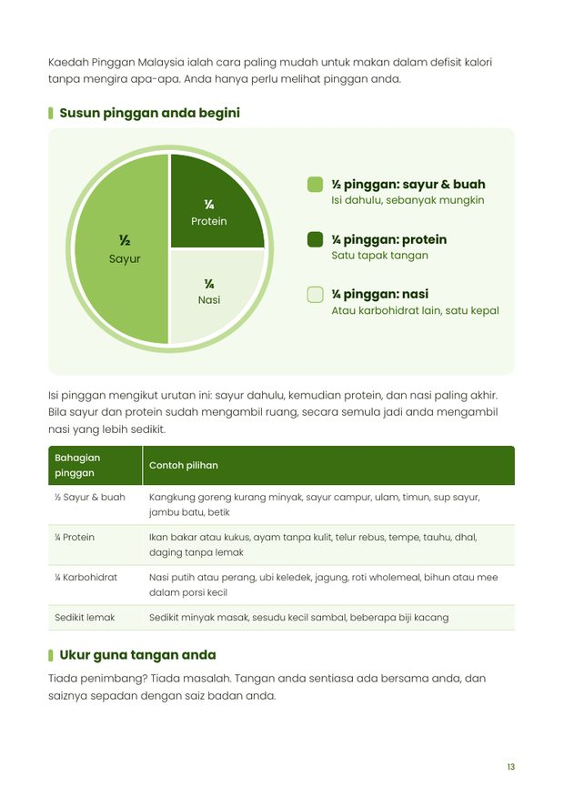
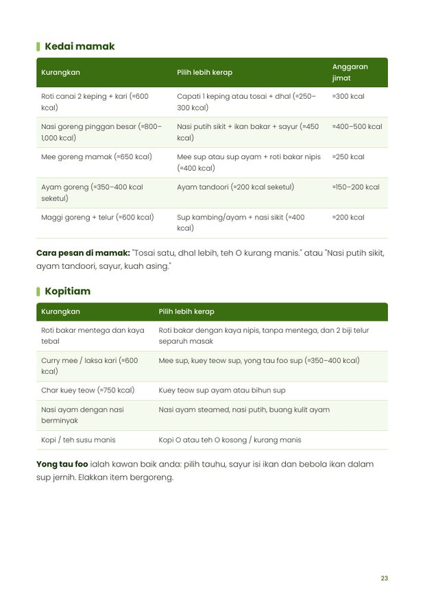
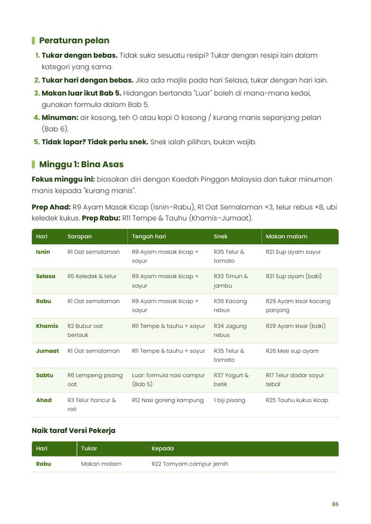

Ebook pelan makan 4 minggu
Turun berat badan dengan makanan Malaysia yang anda sudah kenal.
Untuk pekerja dan pelajar yang tiada masa ke gim. 45 resipi 15–20 minit, pelan makan 4 minggu, dan panduan memesan di mamak, kopitiam dan GrabFood. Tanpa senaman berat, dan tanpa tinggalkan nasi.
- 106 halaman PDF
- 45 resipi
- 2 versi pelan: pelajar dan pekerja
Kalau ini bunyi macam anda
- Keluar awal pagi, balik lewat petang, dan tiada tenaga untuk ke gim.
- Pernah cuba tak makan nasi atau makan salad sahaja, tapi bertahan seminggu dua.
- Hampir setiap hari makan di luar, dan tak pasti apa yang patut dipesan.
- Resipi diet di internet guna bahan mahal yang susah dicari di Malaysia.
Masalahnya bukan anda kurang disiplin. Kebanyakan diet tidak direka untuk cara hidup dan makanan orang Malaysia.
Pendekatan ebook ini
Pemakanan dahulu
Apa yang anda makan memberi kesan paling besar pada berat badan. Pergerakan ringan harian membantu, tapi gim tidak wajib.
Makanan Malaysia
Ikan kembung, tempe, tauhu, telur, sayur kampung dan nasi. Semua bahan boleh dibeli di Lotus's, Mydin, 99 Speedmart atau pasar tani.
Cukup baik, bukan sempurna
Satu hari makan berlebihan tidak merosakkan kemajuan. Anda belajar tabiat yang boleh diteruskan selepas 4 minggu.
Apa di dalam ebook
- Bab 1–3Asas yang mudah difahamiDefisit kalori tanpa perlu mengira, kenapa protein penting, dan Kaedah Pinggan Malaysia: sukat porsi guna tangan dan mangkuk nasi.
- Bab 4Dapur orang sibukBahan asas murah, peralatan yang cukup, dan senarai barang pertama kali.
- Bab 5–6Makan di luar dengan bijakApa nak pesan di nasi campur, mamak, kopitiam, makanan segera dan app penghantaran. Panduan minuman kurang manis, termasuk bubble tea.
- Bab 745 resipiSarapan 5–10 minit, bekal tengah hari, makan malam 15–20 minit, snek bawah 150 kcal dan pencuci mulut. Setiap resipi ada anggaran kalori, protein dan kos.
- Bab 8Meal prep 1 jamJadual minit demi minit untuk hujung minggu, dan panduan keselamatan makanan.
- Bab 9Pelan makan 4 mingguJadual harian untuk versi pelajar (≈RM12–15 sehari) dan pekerja (≈RM20–25 sehari), dengan senarai barang dapur setiap minggu.
- Bab 10–11Bergerak tanpa gim, dan kekal konsistenCara tambah langkah harian, atasi craving dan lapar lewat malam, dan apa perlu buat bila berat tidak turun.
- BonusAlat tambahanPelan kickstart 7 hari, cheat-sheet tukar makanan, dan penjejak kemajuan yang boleh dicetak.
Lihat halaman sebenar
Beberapa halaman daripada ebook.



Sebahagian daripada 45 resipi
- SarapanOat Semalaman Pisang≈280 kcal
- BekalAyam Masak Kicap Kurang Minyak≈450 kcal
- BekalIkan Kembung Bakar Air Asam≈430 kcal
- BekalNasi Goreng Kampung Sayur Lebih≈420 kcal
- Makan malamSup Ayam Sayur Kampung≈330 kcal
- Makan malamTomyam Campur Jernih≈300 kcal
- SnekTempe Bakar Kicap≈110 kcal
- Pencuci mulutPisang Bakar Kayu Manis≈130 kcal
Kalori ialah anggaran untuk satu hidangan.
Sesuai untuk anda jika
- Anda pekerja atau pelajar dengan jadual padat
- Anda mahu turun berat secara perlahan dan kekal
- Anda boleh masak ringkas di dapur biasa
- Anda selalu makan di luar dan mahu pilih dengan lebih baik
Kurang sesuai jika
- Anda mencari cara turun berat dengan sangat cepat
- Anda mahu program senaman atau bina otot
- Anda hamil, menyusu atau ada penyakit kronik tanpa nasihat doktor
Weight Loss Dietary Meals
RM39
- Ebook PDF 106 halaman, dalam Bahasa Melayu
- 45 resipi dengan anggaran kalori, protein dan kos
- Pelan makan 4 minggu dalam 2 versi, dengan senarai barang dapur
- Panduan makan di luar dan panduan minuman
- Bonus: kickstart 7 hari, cheat-sheet dan penjejak kemajuan
Baca di telefon, tablet atau komputer, atau cetak sendiri.
Soalan lazim
Adakah ini buku fizikal?
Tidak. Ini ebook dalam format PDF. Anda boleh baca di telefon, tablet atau komputer, dan boleh cetak halaman yang anda perlukan seperti senarai barang dan penjejak kemajuan.
Perlukah saya bersenam?
Tidak perlu senaman berat. Ebook ini fokus kepada pemakanan, dengan panduan pergerakan ringan harian seperti berjalan 10 minit selepas makan.
Adakah saya perlu berhenti makan nasi?
Tidak. Anda belajar mengawal porsi nasi menggunakan kepal tangan atau mangkuk, dan menambah sayur serta protein.
Bahan-bahannya mahal?
Tidak. Resipi menggunakan bahan tempatan seperti telur, tempe, tauhu, ayam dan ikan kembung. Versi pelajar direka untuk bajet lebih kurang RM12–15 sehari.
Berapa banyak berat yang saya boleh turunkan?
Setiap orang berbeza. Secara umum, kadar yang sihat ialah lebih kurang 0.25 hingga 1 kg seminggu. Ebook ini tidak menjanjikan angka tertentu kerana hasil bergantung pada badan, aktiviti dan konsistensi anda.
Saya ada diabetes atau darah tinggi. Boleh guna?
Sila dapatkan nasihat doktor sebelum mengubah cara pemakanan anda. Ebook ini mengandungi maklumat pemakanan umum untuk orang dewasa yang sihat.
Adakah semua resipi halal?
Ya, semua resipi menggunakan bahan halal.